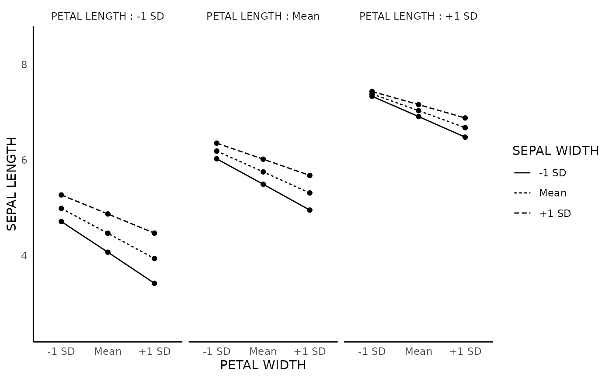

![[Stable]](figures/lifecycle-stable.svg)
The function creates interaction plot. By default, it will create an interaction plot using -1 SD and +1 SD of continuous variables, or the two levels of binary variables.
interaction_plot(
model,
interaction_term = NULL,
response_var_name = NULL,
predict_var1_name = NULL,
predict_var2_name = NULL,
predict_var3_name = NULL,
predict_var1_level = NULL,
predict_var2_level = NULL,
predict_var3_level = NULL,
predict_var1_level_name = NULL,
predict_var2_level_name = NULL,
predict_var3_level_name = NULL,
y_lim = NULL,
plot_color = FALSE,
return_plot_data = FALSE,
return_plot = FALSE,
verbose = TRUE,
print_plot = TRUE,
data = NULL
)Arguments
- model
a regression model object from effect.
- interaction_term
default is the first highest order interaction term in the model. The term should be given explicitly if you want to plot other interaction terms.
- response_var_name
The name of the response variable can be changed using this setting.
- predict_var1_name
The name of the first predictor can be changed using this setting.
- predict_var2_name
The name of the second predictor can be changed using this setting.
- predict_var3_name
The name of the third predictor can be changed using this setting.
- predict_var1_level
The default is -1 SD and +1 SD for a continuous variable, and it is the two levels for a binary variable. These can be changed using this setting.
- predict_var2_level
The default is -1 SD and +1 SD for a continuous variable, and it is the two levels for a binary variable. These can be changed using this setting.
- predict_var3_level
The default is -1 SD and +1 SD for a continuous variable, and it is the two levels for a binary variable. These can be changed using this setting.
- predict_var1_level_name
The labels of the level can be change using this value (e.g.,
c('-1 SD','+1 SD')). The order should be from the left to right on the x-axis.- predict_var2_level_name
The labels of the level can be change using this value (e.g.,
c('-1 SD','+1 SD')). The order should be from the top to down on the legend.- predict_var3_level_name
The labels of the level can be change using this value (e.g.,
c('-1 SD','+1 SD')). The order should be from the left to right on the facets.- y_lim
the plot's upper and lower limit for the y-axis. Length of 2. Example:
c(lower_limit, upper_limit)- plot_color
default if
FALSE. Set toTRUEif you want to plot in color- return_plot_data
default is
FALSE. Set toTRUEto return the plot data.- return_plot
default is
FALSE. Set toTRUEto return the plot.- verbose
deafult is
TRUE.- print_plot
default is
TRUE. Set toTRUEto print the plot.- data
Optional data.frame. Only used when it is not possible to extract data from the model object.
Value
a ggplot object
Examples
model_1 <- lm(Sepal.Length ~ Petal.Width * Sepal.Width,
data = iris)
interaction_plot(model_1)
#> Plot Specification
#> Interaction Term = Petal.Width:Sepal.Width
#>
#> Plot Data
#> ──────────────────────────────────────────────────────
#> Petal.Width Sepal.Width fit se lower upper
#> ──────────────────────────────────────────────────────
#> 0.44 2.62 4.884 0.102 4.683 5.086
#> 1.96 2.62 6.450 0.085 6.283 6.617
#> 0.44 3.49 5.278 0.058 5.164 5.392
#> 1.96 3.49 6.712 0.099 6.517 6.907
#> ──────────────────────────────────────────────────────
model_2 <- lm(Sepal.Length ~ Petal.Width * Sepal.Width * Petal.Length,
data = iris
)
interaction_plot(model_2, # it will automatically select the first three-way interaction term
# change the name of the variables of the plot
response_var_name = 'SEPAL LENGTH',
predict_var1_name = 'PETAL WIDTH',
predict_var2_name = 'SEPAL WIDTH',
predict_var3_name = 'PETAL LENGTH',
# change the number of levels of the variables (e.g., adding the mean)
predict_var1_level = c(0.43, 1.19,1.96),
predict_var2_level = c(2.62, 3.05,3.49),
predict_var3_level = c(1.99,3.758,5.52),
predict_var1_level_name = c('-1 SD','Mean','+1 SD'),
predict_var2_level_name = c('-1 SD','Mean','+1 SD'),
predict_var3_level_name = c('-1 SD','Mean','+1 SD'))

#> Plot Specification
#> Interaction Term = Petal.Width:Sepal.Width:Petal.Length
#>
#> Plot Data
#> ────────────────────────────────────────────────────────────────────
#> Petal.Width Sepal.Width Petal.Length fit se lower upper
#> ────────────────────────────────────────────────────────────────────
#> 0.43 2.62 1.99 4.713 0.076 4.563 4.863
#> 1.19 2.62 1.99 4.073 0.168 3.741 4.405
#> 1.96 2.62 1.99 3.424 0.331 2.769 4.079
#> 0.43 3.05 1.99 4.988 0.051 4.887 5.089
#> 1.19 3.05 1.99 4.468 0.124 4.223 4.713
#> 1.96 3.05 1.99 3.942 0.235 3.477 4.406
#> 0.43 3.49 1.99 5.269 0.053 5.165 5.373
#> 1.19 3.49 1.99 4.872 0.196 4.485 5.260
#> 1.96 3.49 1.99 4.471 0.378 3.723 5.219
#> 0.43 2.62 3.758 6.024 0.148 5.732 6.316
#> 1.19 2.62 3.758 5.492 0.050 5.392 5.592
#> 1.96 2.62 3.758 4.953 0.172 4.614 5.292
#> 0.43 3.05 3.758 6.186 0.113 5.963 6.409
#> 1.19 3.05 3.758 5.751 0.059 5.635 5.867
#> 1.96 3.05 3.758 5.310 0.118 5.077 5.544
#> 0.43 3.49 3.758 6.351 0.192 5.972 6.730
#> 1.19 3.49 3.758 6.016 0.105 5.809 6.223
#> 1.96 3.49 3.758 5.676 0.198 5.284 6.068
#> 0.43 2.62 5.52 7.330 0.281 6.774 7.886
#> 1.19 2.62 5.52 6.906 0.137 6.636 7.176
#> 1.96 2.62 5.52 6.477 0.066 6.346 6.608
#> 0.43 3.05 5.52 7.379 0.210 6.964 7.794
#> 1.19 3.05 5.52 7.029 0.111 6.810 7.249
#> 1.96 3.05 5.52 6.675 0.040 6.595 6.754
#> 0.43 3.49 5.52 7.430 0.356 6.726 8.134
#> 1.19 3.49 5.52 7.155 0.191 6.778 7.533
#> 1.96 3.49 5.52 6.877 0.072 6.735 7.020
#> ────────────────────────────────────────────────────────────────────